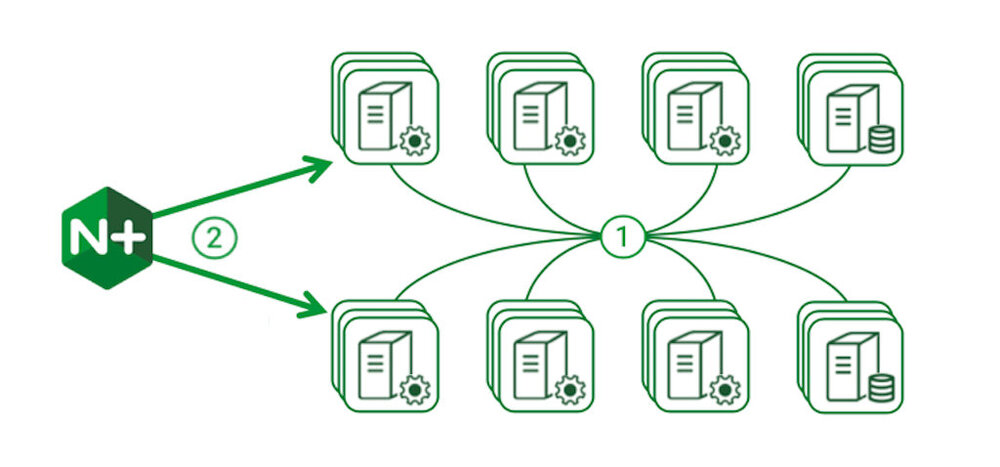
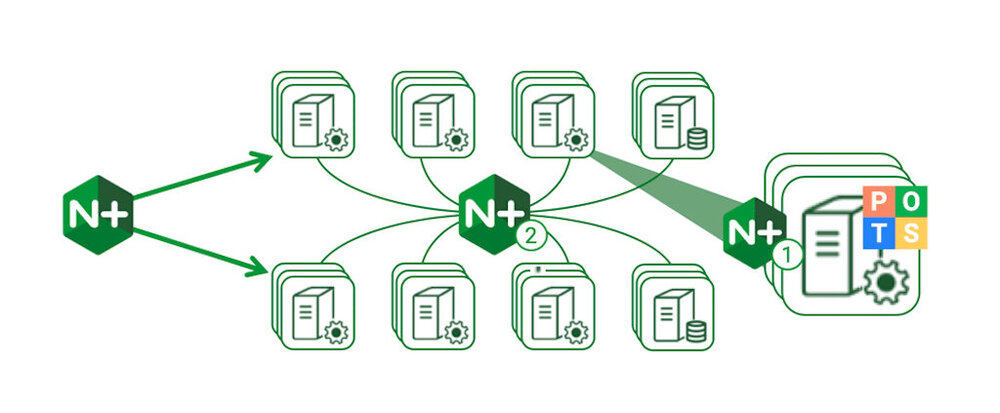
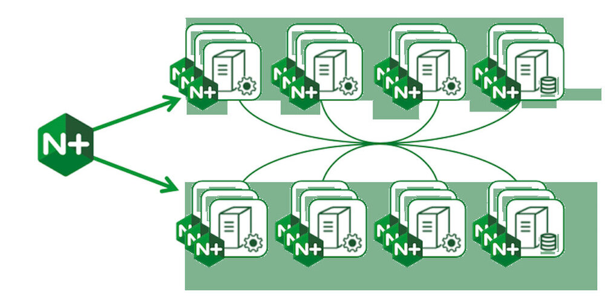
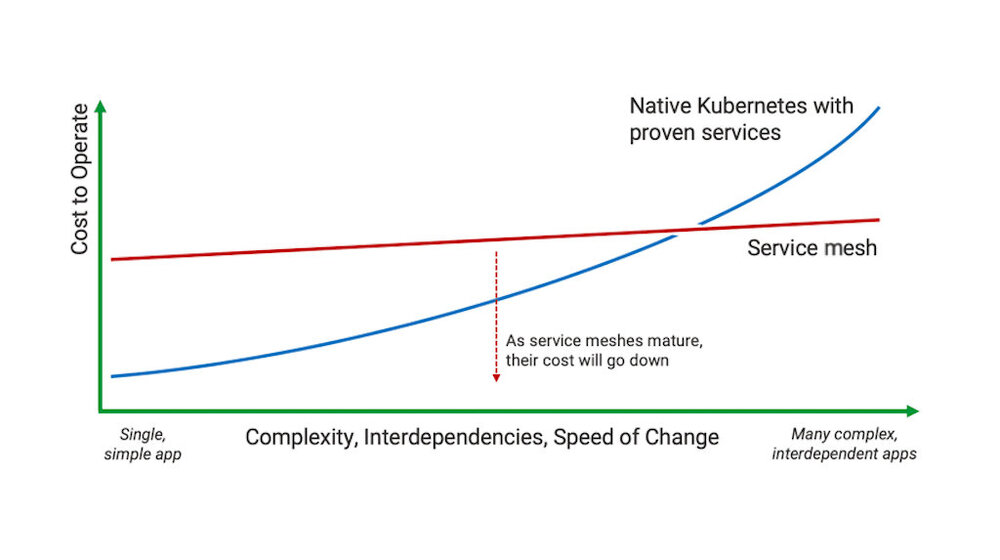

本文为翻译文章，点击查看原文。
“服务网格”是一个热点话题。似乎去年每一个与容器相关的大会都包含了一个“服务网格”议题，世界各地有影响力的业内人士都在谈论这项革命性的技术带来的好处。
然而，截至2019年初，服务网格技术仍不成熟。主要的实现产品Istio还没有准备好进行广泛的企业级部署，只有少数成功的案例运行在生产环境中。也存在其他的服务网格产品，但并没有得到业界专家所说的广泛关注。
我们如何协调这种不匹配呢？一方面，我们听到“你需要一个服务网格”的声音，而另一方面，企业和公司多年来一直在没有服务网格的容器平台上成功地运行着它们的应用。
开始使用 Kubernetes
服务网格是你旅途中的一个里程碑，但它不是起点。
在容器应用的生产环境部署中，Kubernetes已经被证明是一个可以胜任的平台。它提供了一个丰富的网络层，提供了服务发现， 负载均衡， 健康检查 和访问控制 的能力，以支持复杂的分布式系统。
这些功能对于简单和易于理解的应用程序来说已经足够了， 遗留的应用已经被容器化。 它们允许你满怀信心地部署应用，根据需要扩容，避免意外故障，并实现简单的访问控制。

① Kubernetes 提供了带有服务发现和负载均衡的4层网络。② NGINX入口控制器负责把外部连接负载均衡到运行在Kubernetes集群的服务。
Kubernetes在它的API中提供了一个入口（Ingress）资源对象。 这一对象定义了如何选择可以被集群外部访问的服务，一个入口控制器实现了那些策略。 NGINX作为大多数实现中负载均衡的选择，我们为开源的NGINX和NINGX Plus都提供了高性能、可支持的、生成环境的实现。
对很多线上应用而言，Kubernetes和入口控制器提供了所有需要的功能，不需要任何更复杂的演进。
下一步：更复杂的应用
添加安全，监控和流量管理来提升控制和可视化。
当运维团队管理生产环境中的应用时，有时候需要更深入的控制和可见性。复杂的应用可能会表现出复杂的网络行为，在生产环境频繁的变化会给应用的稳定性和一致性带来更多的风险。在共享的Kubernetes集群上运行时，可能需要加密组件之间的通信。
每一项需求都可以使用易于理解的技术来满足：
- 要保护服务间的通信，你可以使用SPIFFE或等效的方法在每个服务间实现双向TLS。
- 为了识别性能和可靠性的问题，每个微服务可以导出兼容Prometheus的指标，并使用Grafana等工具进行分析。
- 要调试这些问题，可以将分布式追踪嵌入到每个微服务中（支持多种语言和框架）。
- 为实现高级的负载均衡策略、蓝绿部署、金丝雀发布和熔断器，你可以选择性的部署代理和负载均衡器。

独立的微服务可以使用Prometheus导出器， 分布式追踪器， 双向TLS和SPIEE进行扩展。代理可以被部署为独立的服务如①，或者像②一样提供中央路由网格。
其中一些技术需要对每个服务做一些小的修改——例如，将证书注入到容器中，或者为Prometheus和OpenTracing添加模块。NGINX Plus可以为关键服务提供专用的负载均衡，通过服务发现和API驱动的配置来编排更改。NGINX微服务参考架构中的[Router Mesh](https://www.nginx.com/blog/microservices- Reference - Architecture - NGINX - Router - mes-model/)模式实现了一个集群范围的流量控制点.
现在，几乎所有在生产环境中运行的容器化应用都使用类似的技术来提高控制和可见性。
为什么我还需要一个服务网格？
如果上面的技术在生产环境已经被验证，服务网格增加了什么？
上一节中描述的每个步骤都给应用程序开发人员和运维团队带来了适应它的负担。单独来说，这些负担很轻，因为解决方案很好理解，但是重量会累积。最终，运行大规模、复杂应用的企业组织可能会达到一个临界点，在这个临界点上，提高服务到服务的应用将变得难以扩展。
这是服务网格承诺要解决的核心问题。服务网格的目标是以标准化和透明的方式交付所需的功能，对应用透明。
服务网格技术仍然是一项新技术，只有很少的生产环境的部署。早期的部署建立在复杂的、自主开发的解决方案之上，具体到每个采用者的需求。一种更为普遍的方法正在出现，称为“sidecar代理”模式。该方法在每个服务实例边部署一个7层代理；这些代理捕获所有的网络流量，并以一致的方式提供额外的功能——双向TLS、追踪、度量、流量控制等。

在服务网格中，每个容器都包含一个嵌入式代理，它拦截所有的进出流量。代理代替服务处理加密、监视和跟踪，并实现高级的流量管理。
服务网格技术仍然是一个非常新的技术，供应商和开源项目都急于实现稳定、功能强大且易于操作的产品。2019年几乎肯定会是“服务网格年”，在这个充满希望的技术中，一些实现将真正为通用应用程序的生产环境部署做好准备。
现在我应该做什么?
2019年初，仅在急需短期方案，并且其它解决方案的局限性导致需求无法被满足的情况下，才需要考虑采用仍属早期阶段的服务网格技术。当前服务网格实现的不成熟和快速变化使得部署它们的成本和风险很高。随着技术的成熟，成本和风险将会降低，采用服务网格的时间点将会越来越近。

随着应用程序复杂性的增加，服务网格将成为实现服务到服务的能力的现实选择。
但是，不要让缺乏稳定成熟的服务网格延误你今天正在考虑的任何计划。正如我们所看到的，Kubernetes和其他编排平台提供了丰富的功能，使得我们可以遵循熟悉的、易于理解的方式来实现复杂的功能。现在继续沿着这些路径前进，使用经过验证的解决方案，如入口路由器和内部负载均衡器。当你到达临界点时，将会知道是时候考虑使用服务网格去实现它们了。